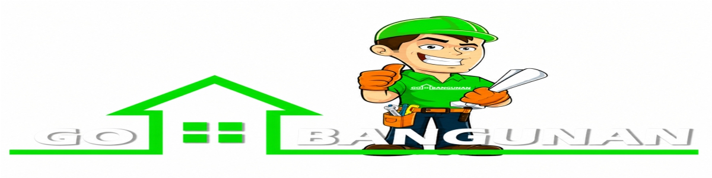

Menyediakan Baut, Sekrup, Perkakas, dan Perlengkapan Rumah berkualitas dengan harga terbaik.
Kami adalah penyedia bahan bangunan tepercaya di Kota Makassar. Menjual berbagai macam kebutuhan pertukangan mulai dari baut, sekrup, perlengkapan roda gerobak, hingga material bangunan lainnya dengan mengutamakan kualitas layanan terbaik serta pengiriman yang cepat ke lokasi Anda.
Alamat: Jl. Anuang No 63 D, Kota Makassar, Sulawesi Selatan
WhatsApp: +62 823-4843-3232
Status Toko: Memeriksa...
Jam Operasional: Senin - Sabtu (08:00 - 17:00 WITA) | Minggu Tutup